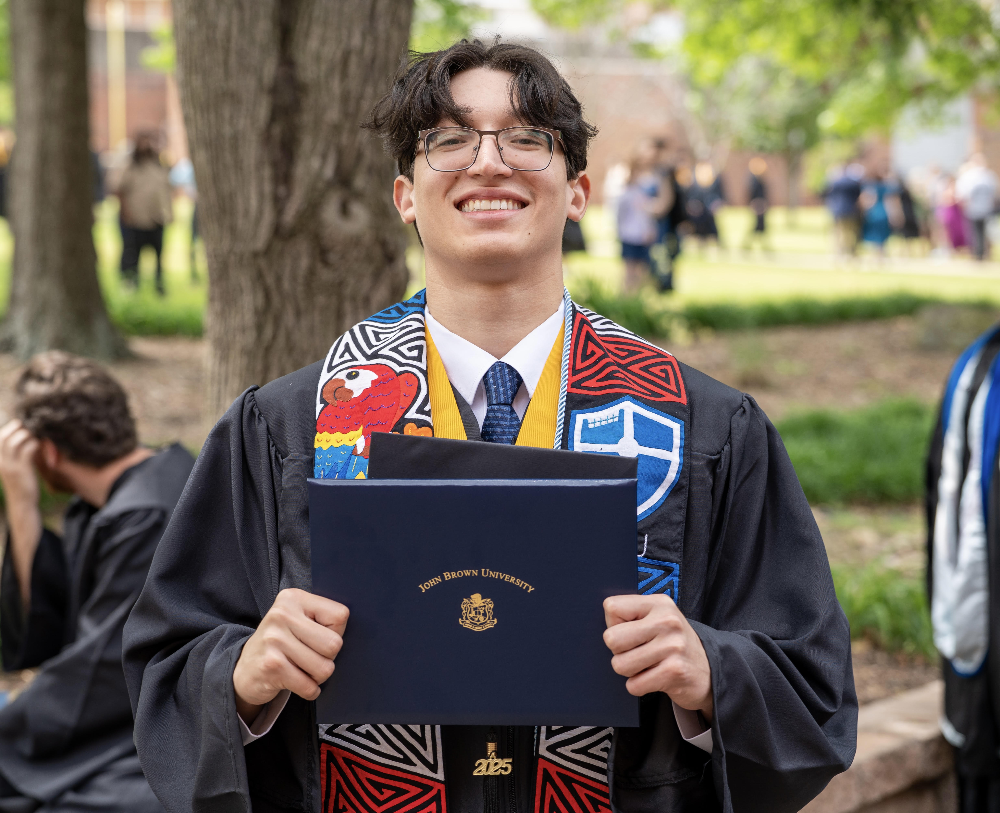

Roberto Aguero

I am a MSc. student at Fordham University in New York City. I'm currently a guest researcher with the Flatiron Institute under the Center for Computational Neuroscience working on connectomics, where I previously was a Summer Research Associate. I am also working with Dr. Yiyin Zhou on light microscopy-based connectomics of Drosophila.
My research sits at the intersection of computational neuroscience and artificial intelligence. I am interested in how animals organize and process sensory information and how sensory stimuli produce neural responses that ultimately lead to behavior. I am motivated by searching for neuro-inspired and biologically plausible architectures that capture the fundamental principles of these sensory processing systems, like the visual cortex or the central complex.
Much of my recent work has focused on multi-modal models: Learning meaningful and organized representations, as well as reverse-engineering the internal representations and circuits that give rise to their behavior. Feel free to reach out if you would like to learn more, or explore collaborations.